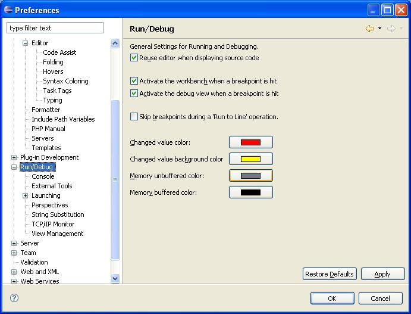

The Eclipse PDT enables customizing its internal debug settings. To do this:
Open Windows | Tools | Preferences.
Select the Run/Debug tab.

Figure: 1 - Run/Debug Preferences
Select the desired options for each of the element
Click OK. These settings will be applied when debugging.
The following is a list of tools that can be used in the debugging process:
Debug Messages Window - Locate and define errors using the messages generated and displayed in the Debug Messages window.
Variable Window and Watches Window - Watch and reference variables, functions, classes, and expressions.
Stack Window - Monitor the call stack and passed variables.
Debug both the Calling and Called Functions - Using Step in, Step out, Step over, and Breakpoints.
Control the Debugging Session - Use complete, or line-by-line debugging options using tools such as Breakpoints and Go to Cursor.
View and Render Standard Output - Using the content generated to the Output window.
View Buffer - Using the content buffered in the Buffer Window.